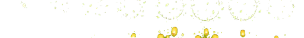
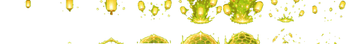
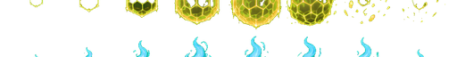

AI Generated Icon/FX Preview
Icons
 ic_ofuda
ic_ofuda
 ic_katana
ic_katana
 ic_fox
ic_fox
 ic_raitei
ic_raitei
 ic_kitsunebi
ic_kitsunebi
 ic_kamaitachi
ic_kamaitachi
 ic_kekkai
ic_kekkai
 ic_juzu
ic_juzu
 ic_bonsho
ic_bonsho
 ic_hamaya
ic_hamaya
 ic_komainu
ic_komainu
 ic_shuriken
ic_shuriken
 ic_kusarigama
ic_kusarigama
 ic_tanegashima
ic_tanegashima
 ic_fuin
ic_fuin
 ic_zangetsu
ic_zangetsu
 ic_tamegiri
ic_tamegiri
 ic_laser
ic_laser
 ic_juso
ic_juso
 ic_honoo
ic_honoo
 ic_ibara
ic_ibara
 ic_sumiuchi
ic_sumiuchi
 ic_suzunari
ic_suzunari
 ic_kiyome
ic_kiyome
 ic_norito
ic_norito
 ic_kagami
ic_kagami
 ic_henbai
ic_henbai
 ic_mandala
ic_mandala
 ic_sanshu
ic_sanshu
 ic_mihashira
ic_mihashira
 buff_aratama
buff_aratama
 buff_shinsoku
buff_shinsoku
 buff_kongo
buff_kongo
 buff_bunshin
buff_bunshin
FX Sheets
lightning
slash
holy
curse

heal

lampburst

ward
foxfire
levelup
awaken